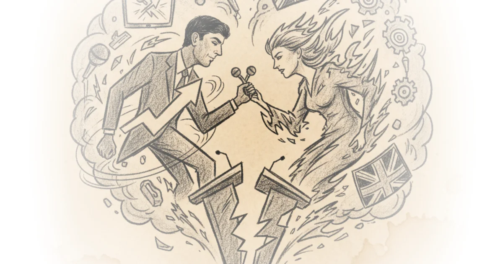
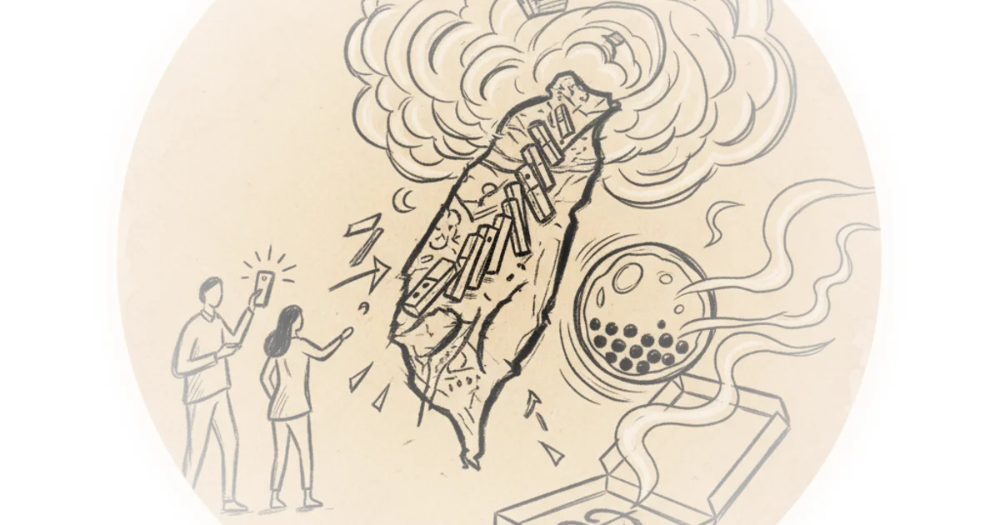

Why i'm embarrassed to be German Sabine Hossenfelder · Sabine Hossenfelder ·Jul 6, 2024 · 10 min read · Political Strategy
Novara reacts to bbcqt special w/ nigel farage & adrian ramsay Novara Media · Novara Media ·Jun 28, 2024 · 75 min read · Political Strategy
Novara reacts to BBC's sunak vs starmer election debate Novara Media · Novara Media ·Jun 26, 2024 · 100 min read · Political Strategy
Novara reacts to itv's multi-party election debate Novara Media · Novara Media ·Jun 13, 2024 · 113 min read · Political Strategy
Novara reacts to sky's 'battle for no.10' leaders special Novara Media · Novara Media ·Jun 12, 2024 · 124 min read · Political Strategy
Novara reacts to 7-party general election BBC debate Novara Media · Novara Media ·Jun 7, 2024 · 119 min read · Political Strategy
Novara reacts to itv sunak vs starmer debate Novara Media · Novara Media ·Jun 4, 2024 · 86 min read · Political Strategy
January q&a w/ novara co-founder aaron bastani Novara Media · Novara Media ·Jan 24, 2024 · 47 min read · Political Strategy
Could lose these voters. Here's why More Perfect Union · More Perfect Union ·Oct 12, 2023 · 13 min read · Political Strategy
We went to a rally: What we heard will shock you More Perfect Union · More Perfect Union ·Aug 9, 2023 · 12 min read · Political Strategy
What does tucker really believe? Then & Now · Then & Now ·Aug 15, 2022 · 32 min read · Political Strategy
Novara reacts to sky news tory leadership special Novara Media · Novara Media ·Aug 4, 2022 · 97 min read · Political Strategy 
Bill Clinton & the day physics died BobbyBroccoli · BobbyBroccoli ·Jun 3, 2022 · 38 min read · Political Strategy
George Bush vomited & set physics back by a decade BobbyBroccoli · BobbyBroccoli ·Apr 22, 2022 · 62 min read · Political Strategy
How to be anonymous in a protest The Hated One · The Hated One ·Mar 27, 2022 · 18 min read · Political Strategy
Ronald Reagan & the biggest failure in physics BobbyBroccoli · BobbyBroccoli ·Mar 20, 2022 · 55 min read · Political Strategy
#TyskySour: Restrictions over; queen gets covid; trojan horse hoax; epstein associate suicide Novara Media · Novara Media ·Feb 21, 2022 · 73 min read · Political Strategy
Blue hydrogen. The greatest fossil fuel scam in history? Dave Borlace · Just Have a Think ·Sep 5, 2021 · 13 min read · Political Strategy
Was julius caesar a military tyrant or a saviour of Rome? Kings and Generals · Kings and Generals ·Aug 17, 2021 · 18 min read · Political Strategy
Why jordan peterson is wrong about ideology Then & Now · Then & Now ·Jun 21, 2021 · 19 min read · Political Strategy
American insurrection at the capitol Devin Stone · LegalEagle ·Jan 7, 2021 · 10 min read · Political Strategy
The political depravity of unjust pardons Devin Stone · LegalEagle ·Dec 29, 2020 · 14 min read · Political Strategy
Live in Taiwan 4: Election coverage & domino's boba pizza Chris Chappell · China Uncensored ·Jan 14, 2020 · 38 min read · Political Strategy 
Live in Taiwan 3: The big vote Chris Chappell · China Uncensored ·Jan 11, 2020 · 12 min read · Political Strategy
Bernie sanders q&a live stream Economics Explained · Economics Explained ·Nov 24, 2019 · 67 min read · Political Strategy
Live in Hong Kong 7: Go for the money Chris Chappell · China Uncensored ·Jun 24, 2019 · 23 min read · Political Strategy
Steve bannon protests pt.2 Alex O'Connor · Cosmic Skeptic ·Nov 16, 2018 · 13 min read · Political Strategy